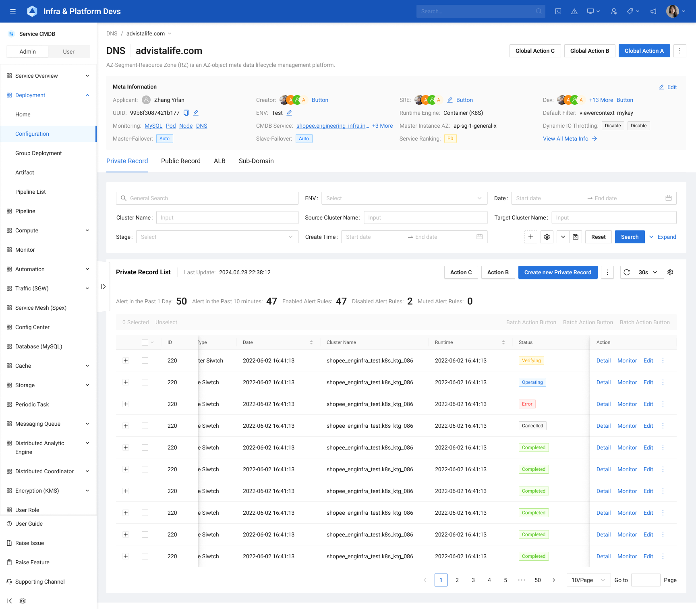
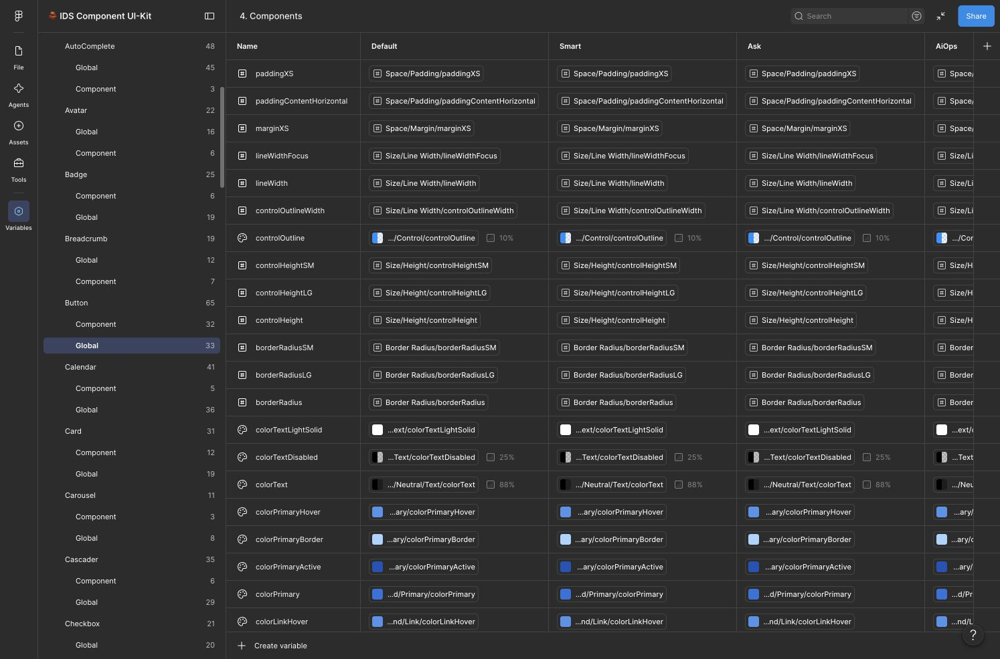

01 / 共同基础
从分散工具中建立共同基础
不同产品有各自的业务，也反复需要导航、表单、筛选、表格等通用界面能力。我建设 InfraD 时，需要从这些共性中提炼能够共同维护的基础，同时为不同业务保留合适的表达与扩展空间。
2020 年初，我成为 App Infra 的第一位设计师。当时 Space 已经存在，一些工程工具仍有独立入口。不同团队各自建设产品，也留下了不同的组件基础、设计规范和实现方式。后来组织整合为 Engineering Infrastructure，产品协作与设计支持的范围进一步扩大。
2021 Q2 汇报 · 第 31 页 · 截图节选

要让这些产品逐步协同，先要有能够共同维护的界面基础。选型需要考虑现有工程环境、组件能力与后续维护。我们最终选择 React 和 Ant Design，并在此之上建设 InfraD。我推动设计侧的资产建设和基础组件覆盖，与前端一起处理产品中的存量差异。2021 年的工作记录中，组件设计、开发与检查已经分批推进，业务缺少的能力也进入共同的需求清单。
Ant Design 提供按钮、输入框等基础组件，承接一批通用界面需求。随着业务深入，更大的重复也变得清楚：怎样组织一个专业页面，哪些信息需要一起出现，哪些操作必须保持一致。这些经验同样值得沉淀。
02 / 业务资产
把重复的业务结构，变成可以继续设计的起点
以 Space 中一类常见的查询与管理页面为例：左侧导航确定工作位置；Page Header 交代标题、副标题、信息与 Tab 等页面上下文；下方用 Filter 找到对象，再用 Table 阅读和处理结果。这类结构在多个业务中反复出现，如果每个产品都重新组织一次，相同问题会不断回到设计师和前端手里。
我从不同业务场景中识别这类可复用的结构，逐步组织和维护 Page Header 等业务组件，以及可直接修改的页面模板。模板保留区域之间的组织关系，业务设计再决定放哪些对象、字段和操作。底层组件在组合中继续保持引用，后续调整才有机会沿共同基础传递。
结构可以复用，业务仍需判断。业务结构
- 组件
- 复用界面结构与相应能力
- Patterns
- 解释某类任务的处理规则，关联组件和模板
- Templates
- 提供可修改的页面组织与组合起点
- Design Tokens
- 为这些资产提供视觉语义与配置
对照原稿：一类查询与管理页面模板
Space 页面模板 · 原始设计稿

但页面结构相近，不代表业务规则可以直接复制。服务器筛选的一个条件包含字段、运算关系和取值；不同用户又可能习惯用名称、IP 或 ID 寻找对象。系统要提供可用的结构，也要允许业务保留这种差异。具体的筛选与信息组织，在 Space 案例中展开。
我把不同资产的作用分开：组件提供可复用的界面能力；Patterns 记录处理某类任务的经验与规则；Templates 提供可以修改的页面起点。比如“提交后如何反馈”是一组场景判断，可以关联表单、弹窗或页面，不必再制造一个更大的组件层级。Design Tokens 则管理这些资产使用的视觉语义与配置。
Space 初始 UI／UX Standards 的规划由产品团队推进。我接手时，部分业务资产已经实现，因此先将它们收纳到 Space Biz Component 中组织和维护，保留团队成员的贡献。这与我主导 InfraD 共用基础建设的职责相互衔接，也决定了系统演进需要兼顾既有资产。
03 / 升级判断
业务资产越多，底层规则越需要清楚
2024 年，我推动 v4 → v5 的底层升级。动因之一，是让 Design Tokens 能真正支撑业务资产与跨产品定制。
升级需要处理业务资产复用、跨产品定制与日常维护等方面的问题。以当时的主题实现为例：主色调整不能完整覆盖界面，不同位置还留有各自的蓝色；通过插件处理的暗色模式，也存在信息层级难辨、切换卡顿和刷新闪烁等问题。面对局部设计差异，修改一项共用值又可能牵动其他组件，难以精确控制影响范围。
随着组件、业务组合和页面模板等资产不断积累，这类问题越难靠逐页修正解决。标题、说明、间距和组件样式等如果只是各自填入具体数值，组合出来的资产仍会逐渐分散。升级需要让共同规则进入资产的实际构造，同时为局部差异留下明确的调整位置。
这些是当时系统与实现的问题。我的判断重点是：现有规则怎样影响界面，哪些应该共同变化，哪些需要独立控制，以及这套机制怎样进入设计和前端的日常工作。
04 / 理解与转译
先弄懂机制，再把它转译成设计资产
我没有技术背景。推动这次升级前，最困难的一项工作，是完整理解 Ant Design 的 Token 机制。只知道“可以换主题”还不足以维护系统：我需要知道一个设计意图怎样影响其他值，组件为什么发生变化，以及怎样保留产品需要的例外。
从基础值到使用含义
Seed 表达基础设计意图，例如基础文字色；算法基于它产生 Map 梯度；Alias 则为值赋予面向使用的语义。同一个颜色值可以服务不同角色，而“标题”“标签”“说明”这些角色需要在资产里保持可辨认的关系。
在当年的升级说明中，我用文字颜色把这件事落到真实页面上：标题引用 colorTextHeading，标签引用 colorTextLabel，说明文字引用 colorTextDescription。这些语义分别对应文字梯度，再用于页面中的相应位置。设计师决定一段文字承担什么角色，就能找到对应规则，不必每次重新记忆一个灰色值。
先确定文字的角色，再找到它的规则。机制示意 · 文字颜色
选择一种语义，查看它引用的梯度与界面位置。
colorTextBase基础文字色
colorTextcolorTextSecondarycolorTextTertiarycolorTextQuaternary域名记录
管理域名的解析信息。
colorText → colorTextHeading → 页面标题
对照原稿：2024 年升级中的文字语义映射
2024-11-06 · 升级说明

理解派生关系后，还要判断改动落在哪里。需要整体调整时，应检查基础值和相关派生；需要改变同类文字的表达时，应检查语义引用；只有特定组件需要不同处理时，则要看局部配置。Token 的派生与组件级覆盖是相关但不同的机制，不能将所有样式理解成只能沿同一条链传下去。
把规则放进 UI Kit，而不只留在说明里
我将这些关系转译成 Figma 变量、组件绑定与使用规则。颜色、尺寸、字体等基础变量与组件配置分别组织；组件继续引用共用变量，业务组合继续引用基础组件。这样，设计稿中看得见的效果，与资产内部的引用关系才有一致的依据。
例如，在我维护的 UI Kit 中，Button 的圆角引用通用圆角变量，Tag 则保留组件自己的圆角配置。Smart 和 Ask 的通用圆角都是 8，但 Tag 分别是 4 和 16。我可以通过局部配置保留产品差异，同时让其他控件继续沿用共同规则。
同样的通用圆角，不同的 Tag。UI Kit · 组件引用与局部配置
切换产品模式，比较共用变量与组件特例。
borderRadius2borderRadiusborderRadius2borderRadiusSM同一组示意元素，观察配置差异。
Default / Space：通用圆角 2；Tag 引用 borderRadiusSM，当前为 2。
同一基础中的引用与局部差异
Button 继续引用全局变量
颜色、尺寸、字体等配置保留共同引用。
InfraD UI Kit · Button / Global

Tag 保留组件局部配置
Smart 为 4，Ask 为 16；与通用圆角配置分别处理。
InfraD UI Kit · Tag / Component

UI Kit 中的实际配置：Button 引用全局变量，Tag 单独管理组件圆角。
与前端讨论时，Design Token 成为共同语言。我们可以指向同一个语义或组件配置，说明设计意图、引用关系和影响范围，再核对实现。Figma 变量不是生产代码的自动同步机制；转译的价值，是让双方围绕一致的规则协作，而不是只对着最终画面猜测数值。
设计侧的 UI Kit 由我持续维护，因此我需要理解整套关系。使用者则不必从头学习这些底层机制：他们应该能够选用合适的资产、选择对应模式，并按指南完成设计。把机制转成可用资产之后，我还需要解释怎样用、何时定制，以及怎样避免破坏已有引用。
05 / 产品差异
共用基础怎样容纳产品差异
升级之后，我随着产品需求持续维护和扩展主题配置。Space 在共同基础上继续发展业务组件和模板；后续的 Smart、Ask 则通过各自的主题配置，组织适合自身业务的资产。目前，我维护的 UI Kit 支持 Default／Space、Smart、Ask、AIOps 四种产品模式。
在 Smart 中，我从系统侧指导主题定制，并与项目设计师共建业务组件、参与专业评审。一线需求和产品页面由项目设计师负责。在 Ask 中，共同基础则支持了我自己承担的业务组件设计。这两种协作方式不同，但都可以从已有资产出发继续发展。
DataSuite 的颜色、间距阶梯和风格与 Space 有明显差异，这套基础可以通过主题与组件配置适配这些差异。实际推进时，我先在有设计支持的业务范围内采用这套基础。Data Infra 有独立的团队安排，产品的存量技术和资源条件也各不相同，因此改造按业务逐步推进，尚未完成全平台统一与生产迁移。
06 / 使用支持
让少数维护者的工作，成为更多人的起点
几个人的设计团队，需要支持包含上百个产品的平台。仅靠设计师重复处理每个页面，难以持续覆盖需求。对于能够沿用成熟结构的常规需求，产品经理可以从模板开始，直接修改字段和内容，不必每一项都重新经过设计团队。
资产可用之后，还会出现新的问题：该选哪个组件，什么场景需要另一种方式，怎样处理状态与反馈。基础组件覆盖后，我主导撰写组件 Design Guides，并收录了一批 Patterns，把这些使用知识放进官方 InfraD 中。
以 Button 指南为例，读者可以先理解用途与类型，再根据操作目标、主次和风险做选择，最后查阅排列、状态和反馈等细节。Patterns 则以创建、编辑、删除、差异比较等任务为切入点，帮助使用者把多个组件放回实际场景。指南与资产在同一入口，遇到问题时才容易查到并用起来。
资产交付之后，仍要帮助团队作出判断。
- 01
选择合适的组件
理解用途、操作目标与风险
- 02
查阅细节规则
确认排列、状态与反馈
- 03
进入具体业务
通过指导与评审处理差异
- 04
回到系统维护
把共性需求与使用问题带回来
我持续通过内部教学、业务定制指导、评审和日常抽查支持团队使用，也把使用中的问题带回组件、主题和规则的维护。前端负责共同组件的实现与工程维护，我们一起对齐设计规则和实际效果。
这套方式减少了重复建设和维护，也降低了设计师记忆具体值、理解规则与新增资产的成本。更具体的变化，是设计师能从共用资产继续设计，TPM 能承接一部分常规需求，产品中的特殊问题又能成为下一轮改进的依据。
07 / 持续维护
继续检验共同基础的使用方式
后来，我也尝试将系统规范、产品知识和项目上下文整理为 Skill 与 Design MD，让 AI 在 Figma 和 React 工程等不同路径中使用这些规则。在这些实验中，我遇到了耗时、非标场景质量和生产衔接等问题，也看到这些方法距离稳定投入生产还有需要解决的环节。这部分实践在 AI 设计文章中单独展开。
回看 InfraD，我完成的工作连接了两个方向：从业务中辨认值得复用的结构，把它们沉淀为资产与使用知识；深入理解底层机制，把设计意图转成能够被设计和工程共同维护的规则。
对我而言，系统的价值体现在实际使用中：共性有共同起点，差异有清楚的调整位置，新成员和协作者有可以继续工作的依据。维护这些关系，是组件库交付之后仍然需要持续承担的工作。
部分界面细节涉及企业内部信息，可在面试交流中结合 Figma 源文件展开介绍。